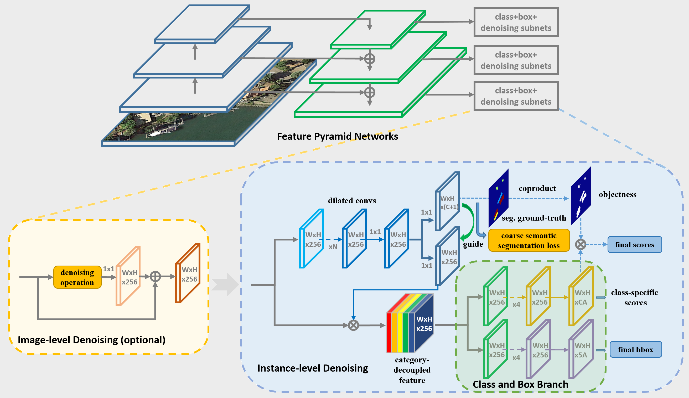

- Xue Yang, Shanghai Jiao Tong University, China
- Junchi Yan (corresponding author), Shanghai Jiao Tong University, China
- Xiaokang Yang, Shanghai Jiao Tong University, China
- Jin Tang, Anhui University, China
- Wenlong Liao, COWAROBOT Co., Ltd, China
- Tao He, COWAROBOT Co., Ltd, China
SCRDet++ Detection for Small, Cluttered and Rotated Objects via Instance-Level Feature Denoising and Rotation Loss Smoothing
Abstract
Abstract
Small and cluttered objects are common in real-world which are challenging for detection. The difficulty is further pronounced when the objects are rotated, as traditional detectors often routinely locate the objects in horizontal bounding box such that the region of interest is contaminated with background or nearby interleaved objects. In this paper, we first innovatively introduce the idea of denoising to object detection. Instance-level denoising on the feature map is performed to enhance the detection to small and cluttered objects. To handle the rotation variation, we also add a novel IoU constant factor to the smooth L1 loss to address the long standing boundary problem, which to our analysis, is mainly caused by the periodicity of angular (PoA) and exchangeability of edges (EoE). By combing these two features, our proposed detector is termed as SCRDet++. Extensive experiments are performed on large aerial images public datasets DOTA, DIOR, UCAS-AOD as well as natural image dataset COCO, scene text dataset ICDAR2015, small traffic light dataset BSTLD and our newly released S2TLD by this paper. The results show the effectiveness of our approach. The released dataset S2TLD is made public available, which contains 5,786 images with 14,130 traffic light instances across five categories.
Authors
Paper & Code & Dataset
- ICCV Paper (SCRDet): [thecvf][arxiv]
- PAMI Submission Paper (SCRDet++): [arxiv]
- InLD Code: [R3Det++][DOTA-DOAI]
- IoU-Smooth L1 Loss Code: [R3Det++][RetinaNet_Rotation]
- Dataset: [S2TLD]
Approach
Instance-Level Feature Denoising (InLD) and Image-Level Feature Denoising (ImLD)

IoU-Smooth L1 Loss
 SJTU Small Traffic Light Dataset (S2TLD)
SJTU Small Traffic Light Dataset (S2TLD)

SJTU Small Traffic Light Dataset (S2TLD)
Performance
Performance on OBB task of DOTA dataset:
| Method | Backbone | PL | BD | BR | GTF | SV | LV | SH | TC | BC | ST | SBF | RA | HA | SP | HC | mAP |
|---|---|---|---|---|---|---|---|---|---|---|---|---|---|---|---|---|---|
| Single-Stage Methods | |||||||||||||||||
| IENet | ResNet101 | 80.20 | 64.54 | 39.82 | 32.07 | 49.71 | 65.01 | 52.58 | 81.45 | 44.66 | 78.51 | 46.54 | 56.73 | 64.40 | 64.24 | 36.75 | 57.14 |
| Axis Learning | ResNet101 | 79.53 | 77.15 | 38.59 | 61.15 | 67.53 | 70.49 | 76.30 | 89.66 | 79.07 | 83.53 | 47.27 | 61.01 | 56.28 | 66.06 | 36.05 | 65.98 |
| P-RSDet | ResNet101 | 89.02 | 73.65 | 47.33 | 72.03 | 70.58 | 73.71 | 72.76 | 90.82 | 80.12 | 81.32 | 59.45 | 57.87 | 60.79 | 65.21 | 52.59 | 69.82 |
| O2-DNet | Hourglass104 | 89.31 | 82.14 | 47.33 | 61.21 | 71.32 | 74.03 | 78.62 | 90.76 | 82.23 | 81.36 | 60.93 | 60.17 | 58.21 | 66.98 | 61.03 | 71.04 |
| R3Det | ResNet152 | 89.24 | 80.81 | 51.11 | 65.62 | 70.67 | 76.03 | 78.32 | 90.83 | 84.89 | 84.42 | 65.10 | 57.18 | 68.10 | 68.98 | 60.88 | 72.81 |
| RSDet | ResNet152 | 90.1 | 82.0 | 53.8 | 68.5 | 70.2 | 78.7 | 73.6 | 91.2 | 87.1 | 84.7 | 64.3 | 68.2 | 66.1 | 69.3 | 63.7 | 74.1 |
| SCRDet++ (R3Det-based) | ResNet152 | 89.20 | 83.36 | 50.92 | 68.17 | 71.61 | 80.23 | 78.53 | 90.83 | 86.09 | 84.04 | 65.93 | 60.8 | 68.83 | 71.31 | 66.24 | 74.41 |
| SCRDet++ MS (R3Det-based) | ResNet152 | 88.68 | 85.22 | 54.70 | 73.71 | 71.92 | 84.14 | 79.39 | 90.82 | 87.04 | 86.02 | 67.90 | 60.86 | 74.52 | 70.76 | 72.66 | 76.56 |
| Two-Stage Methods | |||||||||||||||||
| FR-O | ResNet101 | 79.09 | 69.12 | 17.17 | 63.49 | 34.20 | 37.16 | 36.20 | 89.19 | 69.60 | 58.96 | 49.4 | 52.52 | 46.69 | 44.80 | 46.30 | 52.93 |
| R-DFPN | ResNet101 | 80.92 | 65.82 | 33.77 | 58.94 | 55.77 | 50.94 | 54.78 | 90.33 | 66.34 | 68.66 | 48.73 | 51.76 | 55.10 | 51.32 | 35.88 | 57.94 |
| R2CNN | ResNet101 | 80.94 | 65.67 | 35.34 | 67.44 | 59.92 | 50.91 | 55.81 | 90.67 | 66.92 | 72.39 | 55.06 | 52.23 | 55.14 | 53.35 | 48.22 | 60.67 |
| RRPN | ResNet101 | 88.52 | 71.20 | 31.66 | 59.30 | 51.85 | 56.19 | 57.25 | 90.81 | 72.84 | 67.38 | 56.69 | 52.84 | 53.08 | 51.94 | 53.58 | 61.01 |
| ICN | ResNet101 | 81.40 | 74.30 | 47.70 | 70.30 | 64.90 | 67.80 | 70.00 | 90.80 | 79.10 | 78.20 | 53.60 | 62.90 | 67.00 | 64.20 | 50.20 | 68.20 |
| RADet | ResNeXt101 | 79.45 | 76.99 | 48.05 | 65.83 | 65.46 | 74.40 | 68.86 | 89.70 | 78.14 | 74.97 | 49.92 | 64.63 | 66.14 | 71.58 | 62.16 | 69.09 |
| RoI-Transformer | ResNet101 | 88.64 | 78.52 | 43.44 | 75.92 | 68.81 | 73.68 | 83.59 | 90.74 | 77.27 | 81.46 | 58.39 | 53.54 | 62.83 | 58.93 | 47.67 | 69.56 |
| CAD-Net | ResNet101 | 87.8 | 82.4 | 49.4 | 73.5 | 71.1 | 63.5 | 76.7 | 90.9 | 79.2 | 73.3 | 48.4 | 60.9 | 62.0 | 67.0 | 62.2 | 69.9 |
| SCRDet | ResNet101 | 89.98 | 80.65 | 52.09 | 68.36 | 68.36 | 60.32 | 72.41 | 90.85 | 87.94 | 86.86 | 65.02 | 66.68 | 66.25 | 68.24 | 65.21 | 72.61 |
| SARD | ResNet101 | 89.93 | 84.11 | 54.19 | 72.04 | 68.41 | 61.18 | 66.00 | 90.82 | 87.79 | 86.59 | 65.65 | 64.04 | 66.68 | 68.84 | 68.03 | 72.95 |
| FADet | ResNet101 | 90.21 | 79.58 | 45.49 | 76.41 | 73.18 | 68.27 | 79.56 | 90.83 | 83.40 | 84.68 | 53.40 | 65.42 | 74.17 | 69.69 | 64.86 | 73.28 |
| MFIAR-Net | ResNet152 | 89.62 | 84.03 | 52.41 | 70.30 | 70.13 | 67.64 | 77.81 | 90.85 | 85.40 | 86.22 | 63.21 | 64.14 | 68.31 | 70.21 | 62.11 | 73.49 |
| Gliding Vertex | ResNet101 | 89.64 | 85.00 | 52.26 | 77.34 | 73.01 | 73.14 | 86.82 | 90.74 | 79.02 | 86.81 | 59.55 | 70.91 | 72.94 | 70.86 | 57.32 | 75.02 |
| Mask OBB | ResNeXt101 | 89.56 | 85.95 | 54.21 | 72.90 | 76.52 | 74.16 | 85.63 | 89.85 | 83.81 | 86.48 | 54.89 | 69.64 | 73.94 | 69.06 | 63.32 | 75.33 |
| FFA | ResNet101 | 90.1 | 82.7 | 54.2 | 75.2 | 71.0 | 79.9 | 83.5 | 90.7 | 83.9 | 84.6 | 61.2 | 68.0 | 70.7 | 76.0 | 63.7 | 75.7 |
| APE | ResNeXt-101 | 89.96 | 83.62 | 53.42 | 76.03 | 74.01 | 77.16 | 79.45 | 90.83 | 87.15 | 84.51 | 67.72 | 60.33 | 74.61 | 71.84 | 65.55 | 75.75 |
| CSL | ResNet152 | 90.25 | 85.53 | 54.64 | 75.31 | 70.44 | 73.51 | 77.62 | 90.84 | 86.15 | 86.69 | 69.60 | 68.04 | 73.83 | 71.10 | 68.93 | 76.17 |
| SCRDet++ (FPN-based) | ResNet101 | 89.77 | 83.90 | 56.30 | 73.98 | 72.60 | 75.63 | 82.82 | 90.76 | 87.89 | 86.14 | 65.24 | 63.17 | 76.05 | 68.06 | 70.24 | 76.20 |
| SCRDet++ MS (FPN-based) | ResNet101 | 90.05 | 84.39 | 55.44 | 73.99 | 77.54 | 71.11 | 86.05 | 90.67 | 87.32 | 87.08 | 69.62 | 68.90 | 73.74 | 71.29 | 65.08 | 76.81 |
Performance on HBB task of DOTA dataset:
| Method | Backbone | PL | BD | BR | GTF | SV | LV | SH | TC | BC | ST | SBF | RA | HA | SP | HC | mAP |
|---|---|---|---|---|---|---|---|---|---|---|---|---|---|---|---|---|---|
| Single-Stage Methods | |||||||||||||||||
| SBL | ResNet50 | 89.15 | 66.04 | 46.79 | 52.56 | 73.06 | 66.13 | 78.66 | 90.85 | 67.40 | 72.22 | 39.88 | 56.89 | 69.58 | 67.73 | 34.74 | 64.77 |
| FMSSD | VGG16 | 89.11 | 81.51 | 48.22 | 67.94 | 69.23 | 73.56 | 76.87 | 90.71 | 82.67 | 73.33 | 52.65 | 67.52 | 72.37 | 80.57 | 60.15 | 72.43 |
| EFR | VGG16 | 88.36 | 83.90 | 45.78 | 67.24 | 76.80 | 77.15 | 85.35 | 90.77 | 85.55 | 75.77 | 54.64 | 60.76 | 71.40 | 77.90 | 60.94 | 73.49 |
| SCRDet++ (RetinaNet-based) | ResNet152 | 87.89 | 84.64 | 56.94 | 68.03 | 74.67 | 78.75 | 78.50 | 90.80 | 85.60 | 84.98 | 53.56 | 56.75 | 76.66 | 75.08 | 62.75 | 74.37 |
| Two-Stage Methods | |||||||||||||||||
| FR-H | ResNet101 | 80.32 | 77.55 | 32.86 | 68.13 | 53.66 | 52.49 | 50.04 | 90.41 | 75.05 | 59.59 | 57.00 | 49.81 | 61.69 | 56.46 | 41.85 | 60.46 |
| ICN | ResNet101 | 90.00 | 77.70 | 53.40 | 73.30 | 73.50 | 65.00 | 78.20 | 90.80 | 79.10 | 84.80 | 57.20 | 62.10 | 73.50 | 70.20 | 58.10 | 72.50 |
| IoU-Adaptive R-CNN | ResNet101 | 88.62 | 80.22 | 53.18 | 66.97 | 76.30 | 72.59 | 84.07 | 90.66 | 80.95 | 76.24 | 57.12 | 66.65 | 84.08 | 66.36 | 56.85 | 72.72 |
| SCRDet | ResNet101 | 90.18 | 81.88 | 55.30 | 73.29 | 72.09 | 77.65 | 78.06 | 90.91 | 82.44 | 86.39 | 64.53 | 63.45 | 75.77 | 78.21 | 60.11 | 75.35 |
| FADet | ResNet101 | 90.15 | 78.60 | 51.92 | 75.23 | 73.60 | 71.27 | 81.41 | 90.85 | 83.94 | 84.77 | 58.91 | 65.65 | 76.92 | 79.36 | 68.17 | 75.38 |
| Mask OBB | ResNeXt-101 | 89.69 | 87.07 | 58.51 | 72.04 | 78.21 | 71.47 | 85.20 | 89.55 | 84.71 | 86.76 | 54.38 | 70.21 | 78.98 | 77.46 | 70.40 | 76.98 |
| A2RMNet | ResNet101 | 89.84 | 83.39 | 60.06 | 73.46 | 79.25 | 83.07 | 87.88 | 90.90 | 87.02 | 87.35 | 60.74 | 69.05 | 79.88 | 79.74 | 65.17 | 78.45 |
| SCRDet++ (FPN-based) | ResNet101 | 90.01 | 82.32 | 61.94 | 68.62 | 69.62 | 81.17 | 78.83 | 90.86 | 86.32 | 85.10 | 65.10 | 61.12 | 77.69 | 80.68 | 64.25 | 76.24 |
| SCRDet++ MS (FPN-based) | ResNet101 | 90.00 | 86.25 | 65.04 | 74.52 | 72.93 | 84.17 | 79.05 | 90.72 | 87.37 | 87.06 | 72.10 | 66.72 | 82.64 | 80.57 | 71.07 | 79.35 |
Visualization


{kind=link}
{kind=link}
{kind=link}